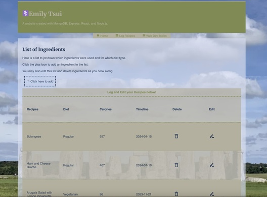

I volunteer remotely for Code Your Future that helps refugees and asylum seekers learn technology and
professionally develop to find jobs in London, UK.
At the moment, I am set on transitioning careers into computer science. I am here reinforicing what I
learned in class to create side projects including a long-term portfolio.
Who Am I?
Student of CS + Registered Nurse
My goal is to have this website be a long-term hobby project that includes MERN stack.
To re-familiarize skills for building a frontend and backend
To include an online resume
To release creative energy
To have an online presence
In Progress...
Projects

Website created from class using MongoDB, Express, Node.js, and React.